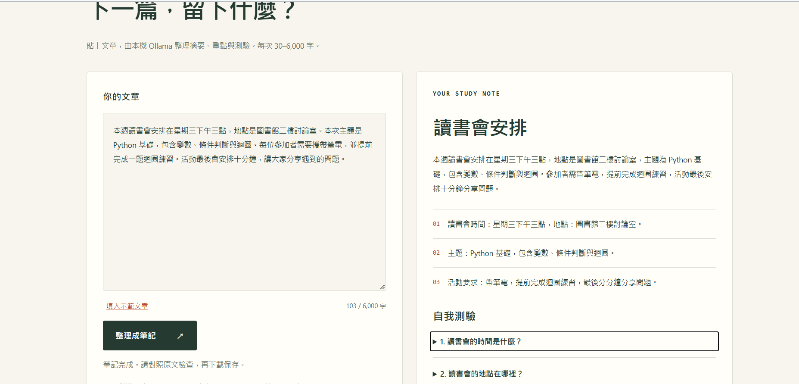

INPUT 自製示範教材
主動回想與間隔複習
正在載入原文…
01 / WHAT I BUILT
拾頁是一個將文章轉為讀書筆記的 Python 工具，適合整理課堂材料與複習短文。
文章送至本機的 qwen3:1.7b 模型，透過 JSON Schema 限定回傳格式，再由 Python 檢查欄位、字數和題目數量。驗證成功後，可匯出 JSON 與 Markdown。
02 / REAL OUTPUT
以下為本機 Ollama 實際產生的成果。
可切換重點與測驗，展開答案。
正在載入原文…
本次結果通過 Python 格式驗證；摘要涵蓋兩種學習方法與搭配方式。模型也補入原文未明確陳述的「提高記憶效果」，第三題混合兩種方法的概念，仍需對照原文修訂。格式正確不代表內容完全正確。
03 / RUN IT YOURSELF
安裝 Python 3.10+、uv 與 Ollama，下載模型並確認 Ollama 已啟動。
ollama pull qwen3:1.7b複製公開儲存庫，在專案資料夾同步 Python 環境。
git clone https://github.com/s12490052/ai-study-notes.git
cd ai-study-notes
uv sync --locked開啟本機網頁，或直接在命令列整理文章。
uv run python main.py --serve
# 瀏覽 http://127.0.0.1:8000/app.html此 GitHub Pages 是靜態作品展示頁；新的文章由本機 Python 介面處理。文章送到本機 Ollama，不需要雲端 API 金鑰。示範資料已隨專案公開，自己的文章不會自動提交到 GitHub。
04 / AI DISCLOSURE
讓工具的角色與驗證範圍都能被看見。
Codex 協助產生 Python 程式、網頁、測試、文件與 Actions 設定；Ollama 的 qwen3:1.7b 負責執行時的筆記生成。
由 Codex 執行單元測試、本機 Ollama 推論與輸出檢查，實測 JSON / Markdown 收錄於專案。GitHub 的部署狀態請以 Actions 頁面為準。
林子堯於 2026-11-08 在本機輸入 103 字的「讀書會通知」並成功生成筆記。我對照原文，確認摘要與三個重點保留星期三下午三點、圖書館二樓討論室、Python 基礎、攜帶筆電及提前完成迴圈練習；摘要也保留最後十分鐘分享問題。
小型模型可能漏掉細節或補入推測；長文每次最多 6,000 字。後續可加入分段摘要與不同模型比較。
